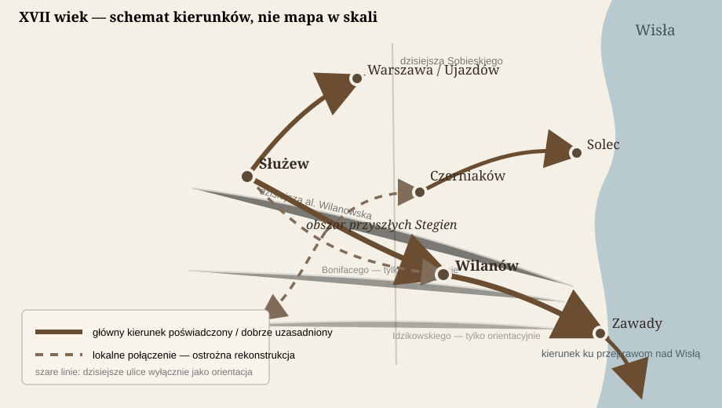

MAPY
Plan sytuacyjny pokazujący położenie Stegien na tle Warszawy.
Odkryj dawne Stegny
Przesuwaj mapę, przybliżaj ją i wybieraj epoki, aby poznawać krajobraz oraz miejscowości związane z historią okolicy. Punkty poza współczesnym centrum Stegien pokazują orientacyjne położenie obszarów, a nie dokładne lokalizacje dawnych obiektów.
Wybrano okres XV–XVII wieku. Kliknij znacznik, aby przeczytać opis.
Podkład mapowy: © OpenStreetMap contributors. Opisy historyczne mają charakter orientacyjny; przed wskazaniem konkretnych dawnych obiektów należy potwierdzić ich położenie w źródłach.

Współczesne Stegny
Współczesna mapa Stegien pokazująca układ ulic, zabudowę i położenie osiedla w południowej części Warszawy. Służy jako punkt odniesienia dla rozdziału „Wstęp”.
Stegny na zarysie mapy Mokotowa
Schematyczny plan sytuacyjny pokazujący Stegny na tle sąsiednich obszarów Mokotowa.

Okolica przyszłych Stegien, XV–XVI wiek — schemat dróg
Schematyczna mapa kierunków komunikacyjnych odtworzona na podstawie informacji wykorzystanych w felietonie „Stegny przed Stegnami — wiek XVI i XVII”. Nie jest mapą w skali i nie przedstawia dokładnego przebiegu dróg, którego źródła dla tego okresu nie pozwalają pewnie ustalić.
Kierunki podróży w XVII wieku
Schemat głównych kierunków komunikacyjnych w okolicy przyszłych Stegien. Nie jest to mapa wszystkich dróg ani próba odtworzenia ich dokładnego przebiegu. Dzisiejsze ulice Sobieskiego, al. Wilanowska, Bonifacego i Idzikowskiego służą wyłącznie jako współczesne punkty orientacyjne.

Wsie i osady południowej Warszawy w XVIII wieku
Mapa historyczna pokazująca dawne wsie i osady południowej Warszawy na tle współczesnej mapy. Lokalizacja oparta na mapie Pircha z 1747 r. oraz mapach z początku XIX wieku.

Stegny przed Stegnami — XVIII wiek
Sześć map tematycznych opracowanych na podstawie mapy Karola de Perthéesa z końca XVIII wieku. Każda pokazuje inny aspekt krajobrazu, dróg, religii, gospodarki i przemian tej części Warszawy.


Stegny w XX wieku — dawne mapy i plany
Zestaw historycznych map i planów pokazujących Stegny oraz ich okolicę w różnych momentach XX wieku. Kliknij wybraną ilustrację, aby otworzyć ją w pełnym rozmiarze.


- Mapa osiedla i układ ulic
- Mapa historyczna — rozwój zabudowy
- Ilustracje lotnicze i porównanie zmian
- Mapa budynków i adresów
- Mapa zieleni, usług i komunikacji